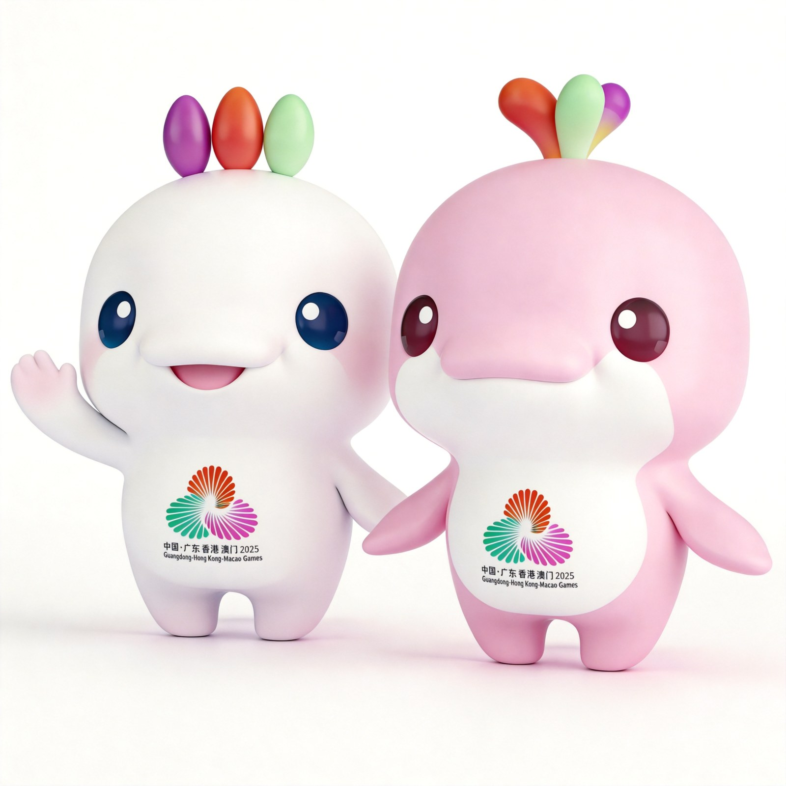
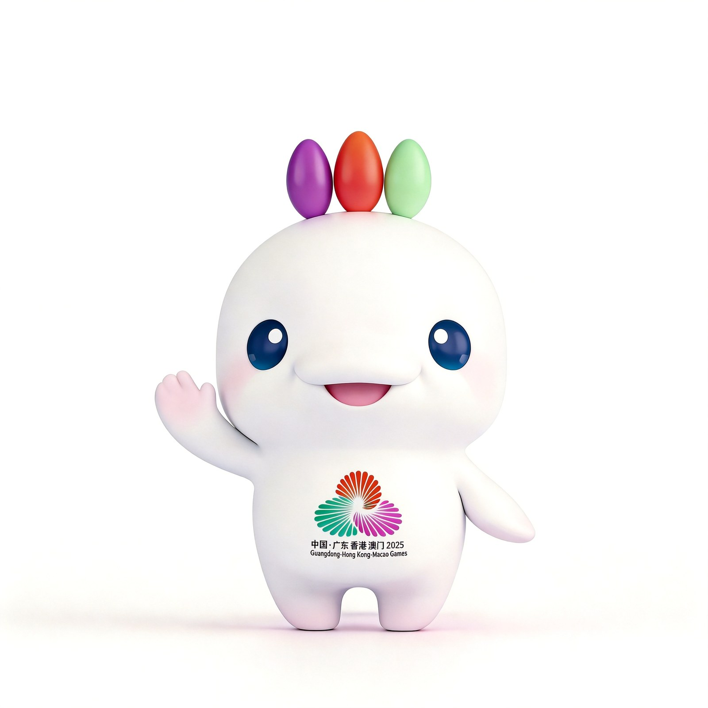
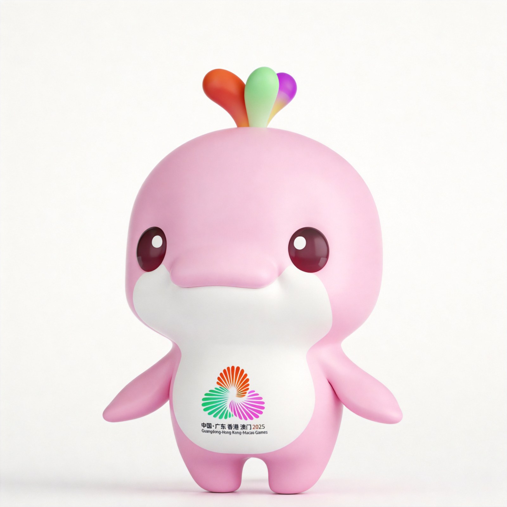

🎨 设计诞生
中华白海豚化身吉祥物
广州美术学院刘平云教授团队——也就是「冰墩墩」的设计团队——为第十五届全运会设计了吉祥物「喜洋洋」和「乐融融」。设计原型选择了一级保护动物中华白海豚，它们被称为「海上国宝」，而珠江口恰好是全球最大的中华白海豚栖息地，种群数量超过2000头。

第十五届全运会吉祥物「喜洋洋」和「乐融融」
中华白海豚化身的国民萌物，从赛场到全网的文化现象
从官方昵称到民间出圈，一对海豚吉祥物如何成为全网最火IP
广州美术学院刘平云教授团队——也就是「冰墩墩」的设计团队——为第十五届全运会设计了吉祥物「喜洋洋」和「乐融融」。设计原型选择了一级保护动物中华白海豚，它们被称为「海上国宝」，而珠江口恰好是全球最大的中华白海豚栖息地，种群数量超过2000头。
白色吉祥物名为「喜洋洋」，粉色名为「乐融融」，合在一起就是「喜气洋洋、其乐融融」。两只分别呼应白色和粉色的中华白海豚，其肤色变化源自运动时血管充血的生理特征。圆润的身体搭配尖嘴造型，可爱到犯规。
由于造型过于圆润，头顶的彩色水花酷似鸡冠，再加上尖尖的小嘴巴——网友们纷纷表示：这不就是广东名菜「白切鸡」和「豉油鸡」吗？！于是一声「大湾鸡」横空出世，比官方名字还响亮，迅速成为全网统一的昵称。从海豚到鸡，这波属实是广东特色了。
2025年11月，全运会开幕式上，武校少年身穿吉祥物服装，做出了倒立、蹦迪、单腿旋转等一系列高难度又萌态十足的动作。视频在抖音播放量迅速突破3.7亿次，「大湾鸡」正式从体育圈杀入全民视野，成为现象级文化符号。
一白一粉，一对中华白海豚兄弟，网友口中的「白切鸡」与「豉油鸡」

白色的「喜洋洋」对应常态下的中华白海豚，性格安静内敛，被网友戏称为 i 人。设计团队特意把技巧型运动项目分配给它，聪明又灵巧。

粉色的「乐融融」源自白海豚运动时血管充血变粉的生理特征，活泼外向，是名副其实的 e 人。力量型运动项目都归它，热情又有活力。
每一个设计细节都有深意，从科学到文化的层层巧思
中华白海豚被誉为「海上国宝」，是国家一级保护动物。珠江口水域是全球最大的中华白海豚栖息地，种群数量超过2000头。选择中华白海豚作为原型，既体现了粤港澳三地的生态纽带，也传递了海洋保护的深层理念。
头顶三朵彩色水花是整个设计的灵魂：红色代表广东的木棉花，紫色代表香港的紫荆花，绿色代表澳门的莲花。三种颜色汇聚在一起，象征粤港澳三地同心协力，共同举办这场体育盛会。水花的造型也巧妙呼应了海豚跃出水面的瞬间。
喜洋洋的白色和乐融融的粉色，并非随意选择——这源于中华白海豚真实的生理特征！当白海豚在水中高速运动时，血管会充血，皮肤颜色会从灰白逐渐变为粉色。设计师巧妙地将这一科学事实融入配色，白色代表静态的优雅，粉色代表运动的活力。
开幕式上那些让人忍不住反复观看的名场面
武校少年扮演的「大湾鸡」在开幕式上一上来就放了个大招——稳稳当当来了个倒立！圆滚滚的身体倒过来的样子萌翻全场，观众席瞬间沸腾。
谁能想到全运会开幕式上会出现蹦迪环节？「大湾鸡」随着音乐节奏蹦蹦跳跳，圆滚滚的身躯配合灵活的舞步，反差萌直接拉满。
最令人惊叹的当属单腿旋转！穿着笨重道具服的少年竟然完成了一个漂亮的旋转，「大湾鸡」在舞台上转成了一个小陀螺，全网直呼「太厉害了」。
开幕式视频在抖音上播放量突破3.7亿次。「大湾鸡」的表演片段被疯狂转发和二创，从体育频道火到娱乐热搜，真正实现了全民关注。
2800多款周边商品上线即售罄！毛绒玩偶、钥匙扣、盲盒……销售量突破600万个，一举超越前辈「冰墩墩」，成为全运会历史上最畅销的吉祥物周边。
白色的是「白切鸡」，粉色的是「豉油鸡」——广东网友的吃货脑洞让全国人民笑到停不下来。「大湾鸡」这个昵称，大概是全运会历史上最接地气的吉祥物外号了。
从赛场吉祥物到国民文化符号，数据见证大湾鸡的破圈之路
「大湾鸡」周边商品销售量超过600万个，超越了2022年冬奥会的现象级IP「冰墩墩」。更令人惊喜的是，设计团队一脉相承——都来自广州美术学院刘平云教授团队。从冰墩墩到大湾鸡，这个团队似乎掌握了「全民萌物」的设计密码。而「大湾鸡」更独特的地方在于，它不仅有可爱的外表，更承载着粤港澳三地文化融合的深层意义。
本站仅是一个粉丝用爱发电的小站 🕊️ 感谢设计团队创造了这么美好的作品
联系站长：tony994150378@163.com